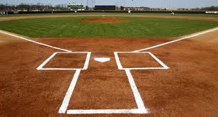
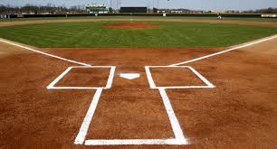

Abby was an 8th grader at Delphi Community Middle School, where she played saxophone in the school band, and was on the volleyball team. She had attended several area churches with her family. She enjoyed reading, and had a big reading counts number in her language arts class. She loved to camp and swim, and loved being outdoors, she liked riding ATV's with her family on camping trips to Michigan. She loved all animals, especially her cat Bongo. She enjoyed photography & art, drawing and creating little masterpiece's, that decorated her mothers home. She and her good friend Libby were excited and looking forward to planning their next 4 years of school together. She would have celebrated her 14th birthday on the 23rd of June.
In honor of Abby's love for the outdoors and the arts, our plans for a band shell and 2 play grounds will allow children in future years to enjoy the same things she did.


 
